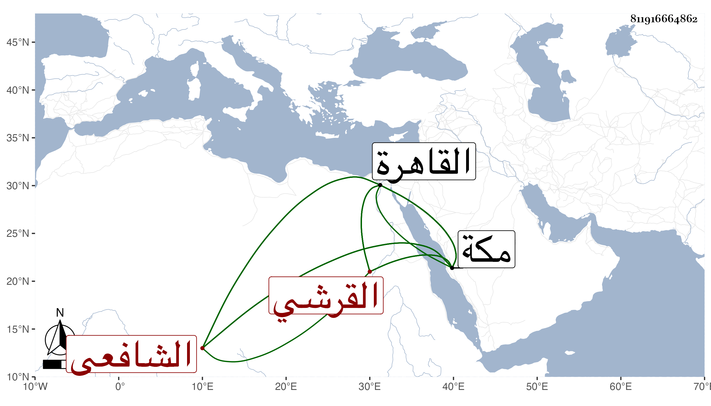

0902Sakhawi.DawLamic.ITO20230111-ara1.EIS1600.811916664862
Biography ID: 811916664862
722
محمد بن محمد بن محمد بن محمد خير الدين أو قطب الدين أبو الخير بن الجمال أبي السعود بن أبي البركات بن أبي السعود القرشي الشافعي بن ظهيرة ابن عم اللذين قبله وابن أخت المحيوي عبد القادر المالكي الماضي . ولد حين خسوف القمر من ليلة الثلاثاء رابع عشر شعبان سنة ست وأربعين وثمانمائة بمكة ونشأ فحفظ القرآن وصلى به في المسجد الحرام وأربعي النووي ومنهاجه وغيرهما وعرض علي جماعة ولازم خاله في العربية فتميز فيها وكذا لازم الجوجري في الفقه بمكة وبالقاهرة وقد ارتحل إليها وأذن له في الإقراء وغيره وسمع إمام الكاملية وحلق لإقراء العربية وغيرها بل قرأ عليه حفيد الأهدل سنن ابن ماجة ونقم عليهما ذلك بل وجد بخطه أنه أكمل شرح خاله للتسهيل وذلك من باب التصغير وشرح الجرومية وسماه رشف الشرابات السنية من مزج ألفاظ الجرومية ولامية الأفعال لابن ملك والإيجاز للنووي في المناسك وصل فيهما إلى نحو النصف فالله أعلم ، وكان قد سمع أبا الفتح المراغي والزين الأميوطي والأبي والشهاب أحمد بن علي المحلي وآخرين وأجاز له ابن الفرات وسارة ابنة ابن جماعة وأبو جعفر بن الضياء ومن أجاز لابن عمه النجم محمد بن النجم محمد وتردد إلي بمكة مع خاله ثم بانفراده وكذا بالقاهرة ، وهو منجمع مذكور بسكون وتقل مع حسن خط وخبرة بالشروط ونظم ونثر وقد قدمت زوجته أم الحسن ابنة ابن ظهيرة وسبطة التقي بن فهد القاهرة في أثناء سنة خمس وتسعين لوفاء دينها مما حمله على تمكينها من المجيء الذي لا طائل وراء عدم التوسعة عليها وبالجملة فهو فاضل ساكن . ومن نظمه مما كتبه عنه النجم بن فهد :
| ماذا الجافايا ظبية الوعساء | أضرمت نار الهجر في أحشائي |
| وأنا الذي أخلصت فيك محبتي | ووقفت مختارا عليك ولائي |
وقوله وقد برز لوداع بعضهم ففاته :
| لتقبيل الأكف حبيب قلبي | برزت إلى ثنيات الوداع |
| فلم يقدر وذاك لسوء حظي | فعدت ومقولي مثن وداع |
وقوله :
| ألق المفاتيح عند الباب منتظرا | من الإله مفاتيحا تلي فرجا |
| واستعمل الصبر في كل الأمور فإن | صبرت في الضيق تلق بعده فرجا |
